JCOIN 2019 Federal Funding Dashboard User Guide
Revised October 31, 2022
Table of Contents
Section 1. Filtering on State and/or City
Section 2. Filtering on Funder
Grant Distribution by Funder Chart
Section 1. Filtering on Funder
Grant Distribution by State Chart
Section 2. Filtering on State and Funder
Introduction
The JCOIN 2019 Federal Funding Dashboard provides users with the opportunity to explore the allocation of federal funding across the United States to address the opioid crisis in criminal justice-involved for 2019 and 2020.
Depending on their search criteria, including state, city, Year, and funder, users can explore grants awarded across multiple categories by nine different funding organizations, including 2 partnerships.
Dashboard Diagram
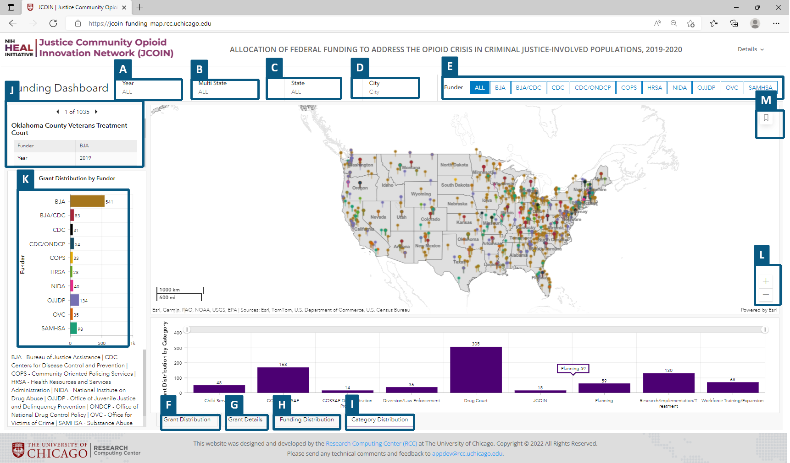
| Drop-down Menu | Bar-Chart Menu |Left-panel| Map Control |------------------------|--------------------------------------------|----------| | A - Year | F - Grant count by State |J - Grant List|L - Zoom (+/-) | B - Multi-state Grants | G - List of Grants |K - Funder Chart|M - Home button | C - State | H - Funding Amount by State | | D - City | I - Grant distribution by Funding Category | | E - Funder | |
Dashboard Layout
-
Header
- About the Project
- Justice Community Opioid Innovation Network (JCOIN) information
- Link for additional information
- About the Project
-
Funding Dashboard
graph TD
C{Dashboard Filter}
C -->D[Year]
C -->E[Multistate]
C -->F[State]
C --> G[City]
C --> H[Funder]-
US Map
- Home button
- Zoom (+/-)
-
Grant List
- Forward/reverse arrows
- Title
- Funder
- Year
- Funding
- Grant number
- Institution receiving funding
- Multi-state indicator
-
Grant Distribution by Funder Chart
- Funders (acronym)
- Funder List (acronym and full funder name)
-
Grant Distribution by State
- Grant count by State
- X-axis – states
- Y-axis – number of grants
- Directional scroll bar
- Table
- Funder
- Title
- Institution receiving funding
- Funding
- Category
- City
- State
- Multistate
- Funding Amount by State
- X-axis – states
- Y-axis – Total grant amount
- Directional scroll bar
- Grant distribution by Funding Category
- X-axis – Funding Category
- Y-axis – number of grants
- Grant count by State
-
Footer
- Methods
- JCOIN Methods
- Data Sources
- Methods
Funding Dashboard
The dashboard provides the user the opportunity to filter their search results on year, State, City, or a combination of all, as well as Funder.
Section 1. Filtering on State and/or City
Action
- Select the desired Year from the drop down
- 2019 or 2020 or both may be selected
- For Multi-state grants True or False options are available
- Select the desired state from the drop down
- Up to 1 state may be selected
- Only states with grants will be available
- Select the desired city or cities from the drop down
- Multiple cities may be selected
- Only cities with grants will be available
Results
- Funder
- The funder list will only display those that have funded grants in the selected state and cities, if selected.
- Map
- Pinpoints that are color-coded to the applicable funder will display in the selected state.
- Click on the pinpoint and 6 lines of grant related information will display in a pop-up.
- Grant List
- The number of associate grants will display with the option to move forward or in reverse to view the list.
- For each grant, the title, Funder, Grant number, funding, and Institution receiving funding will be viewable.
- The number of associate grants will display with the option to move forward or in reverse to view the list.
- Grant Distribution by Funder chart
- The Funder acronym and the number of grants will display.
- The Funders are color-coded to match the pinpoint colors on the map.
- Grant count by State chart, table, Funding Amount by State chart, and Grant distribution by Funding Category
- Bar count by State (grant distribution), and Funding Amount by State chart (Funding distribution)
- The states with grants will display
- Depending on the number of states, the state abbreviations may not all appear on the x-axis. Using the directional scroll bar will allow the user to explore the unlabeled states.
- Hover over any vertical bar and the state abbreviation and the number of grants will display.
- The states with grants will display
- Grant Details
- Grant details will display, alphabetized by Funder and State.
- Selecting a grant will update the map to the grant location.
- Select the Home button to reset the map.
- Grant distribution by Funding Category (Category distribution) indicated count of grants by nine finding categories. Select Year 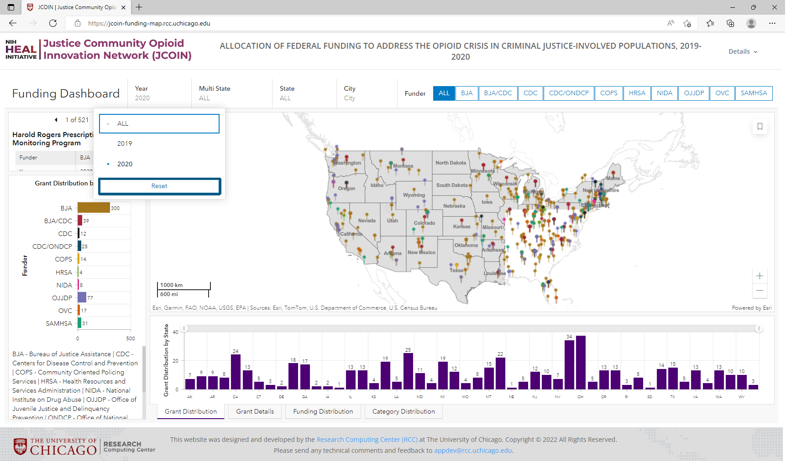 Select State 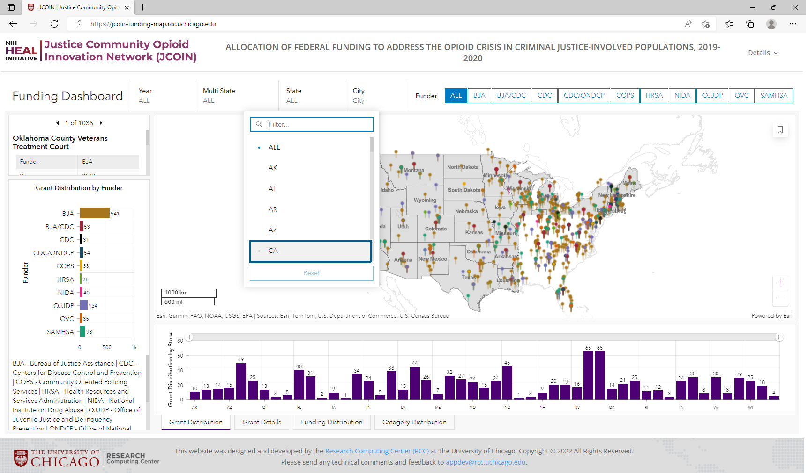 Select City 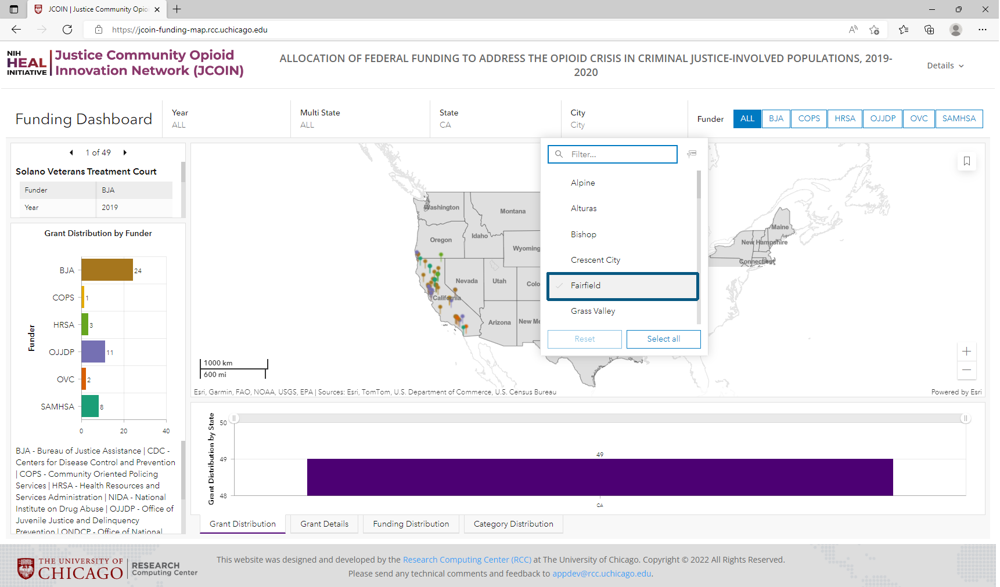
- Bar count by State (grant distribution), and Funding Amount by State chart (Funding distribution)
Section 2. Filtering on Funder
Action
- Select the desired Funder
- Multiple Funders may be selected.
- NOTES
- To deselect a Funder, with the cursor on the Funder press Ctrl + Shift OR click on the Funder button.
- A state and/or cities may also be selected.
Results
- Map
- Pinpoints that are color-coded to the applicable funder(s) will display in the states.
- Click on the pinpoint and 4 lines of grant related information will display in a pop-up.
- Grant List
- The number of associate grants will display with the option to move forward or in reverse to view the list.
- For each grant, the title, Funder, Grant number, and Institution receiving funding will be viewable.
- The number of associate grants will display with the option to move forward or in reverse to view the list.
- Grant Distribution by Funder chart
- The Funder acronym and the number of grants will display.
- The Funders are color-coded to match the pinpoint colors on the map.
- Grant Distribution by State chart and table
- Bar Chart by State
- The states with grants will display
- Depending on the number of states, the state abbreviations may not all appear on the x-axis. Using the directional scroll bar will allow the user to explore the unlabeled states.
- Hover over any vertical bar and the state abbreviation and the number of grants will display.
- The states with grants will display
- Table
- Grant details will display, alphabetized by Funder and State
- Selecting a grant will update the map to the grant location.
- Select the Home button to reset the map. 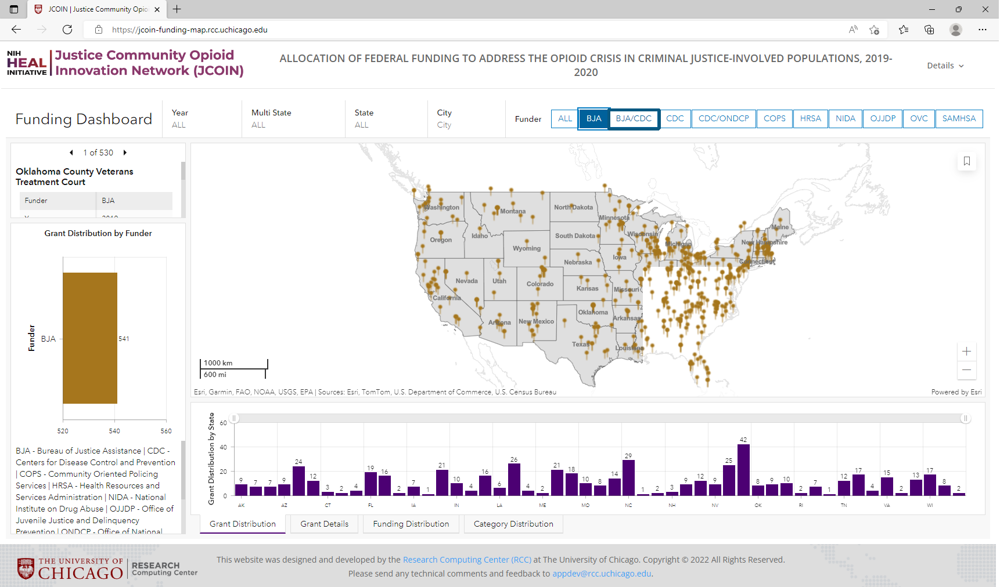 Multiple funder selection 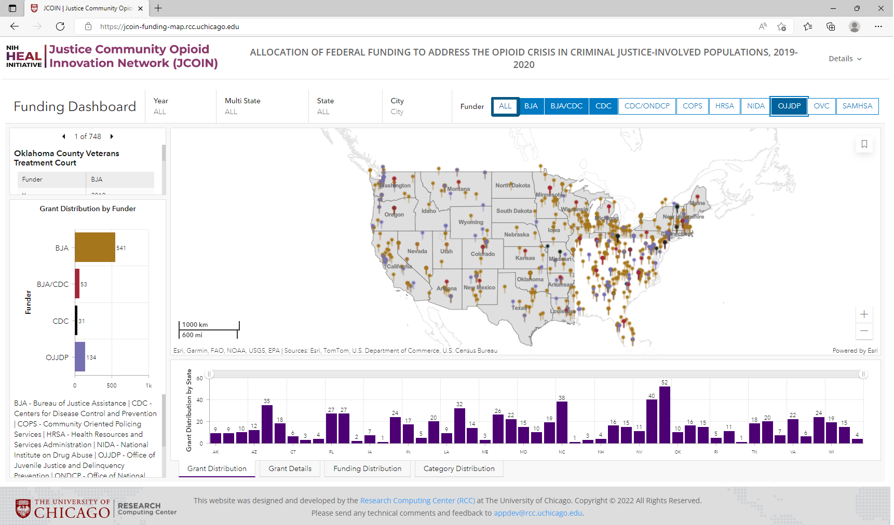
- Bar Chart by State
Grant Distribution by Funder Chart
The chart provides the user with information about which funders provided grants based on the selection criteria (e.g., year, state and/or city). A user is able to make additional selections to filter results to explore an individual funder or a combination of funders, as applicable.
Section 1. Filtering on Funder
Action
- Select the bar of the desired Funder
- Up to 1 Funder may be selected.
- NOTE:
- To deselect a Funder, click on the selected Funder bar OR click on the white space in the chart.
- The funder bars not selected will be grayed out.
Results
- Map
- Pinpoints that are color-coded to the selected funder will display in the states.
- Click on the pinpoint and 4 lines of grant related information will display in a pop-up.
- Grant List
- The number of associated grants will display with the option to move forward or in reverse to view the list.
- For each grant, the title, Funder, Grant number, and Institution receiving funding will be viewable.
- The number of associated grants will display with the option to move forward or in reverse to view the list.
- Grant Distribution by State chart and table
- Bar Chart by State
- The states with grants will display
- Depending on the number of states, the state abbreviations may not all appear on the x-axis. Using the directional scroll bar will allow the user to explore the unlabeled states.
- Hover over any vertical bar and the state abbreviation and the number of grants will display.
- The states with grants will display
- Table
- Grant details will display, alphabetized by Funder and State.
- Selecting a grant will update the map to the grant location.
- Select the Home button to reset the map. 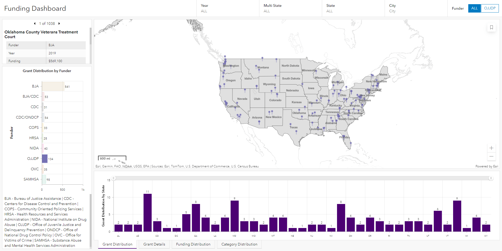
- Bar Chart by State
Grant Distribution by State Chart
The chart provides the user with a Bar Chart by State detailing the grants awarded to institutions within a given state. A user is able to make an additional selection to filter results to explore individual states.
The chart provides the user with a Table detailing grant-specific information, displayed in alphabetical order by Funder and then state. A user has the option to select a grant to view the location of the institution receiving funding on the map.
Section 1. Filtering on State
Action
- Select the bar of the desired state
- Up to 1 state may be selected.
- NOTE:
- To deselect a state, click on the selected State bar OR click on the white space in the chart.
- The state bars not selected will appear faded.
Results
- Map
- Pinpoints that are color-coded to the selected funder will display in the states.
- Click on the pinpoint and 4 lines of grant related information will display in a pop-up.
- Grant List
- The number of associated grants will display with the option to move forward or in reverse to view the list.
- For each grant, the title, Funder, Grant number, and Institution receiving funding will be viewable.
- The number of associated grants will display with the option to move forward or in reverse to view the list.
- Grant Distribution by Funder chart
- The associated Funder acronyms and the number of grants will display.
- The Funders are color-coded to match the pinpoint colors on the map.
- Grant Distribution by State table
- Grant details will display, alphabetized by Funder and State
- Selecting a grant will update the map to the grant location.
- Select the Home button to reset the map.
Section 2. Filtering on State and Funder Action
- Select the bar of the desired state
- Only 1 state may be selected.
- NOTE:
- To deselect a state, click on the selected State bar OR click on the white space in the chart.
- The state bars not selected will appear faded.
- Select the bar of the desired Funder in the Grant Distribution by Funder chart
- Up to 1 Funder may be selected.
- NOTE:
- To deselect a Funder, click on the selected Funder bar OR click on the white space in the chart.
- The funder bars not selected will be grayed out.
Results
- Map
- Pinpoints that are color-coded to the selected state and funder will display in the state.
- Click on the pinpoint and 4 lines of grant related information will display in a pop-up.
- Grant List
- The number of associated grants will display with the option to move forward or in reverse to view the list.
- For each grant, the title, Funder, Grant number, and Institution receiving funding will be viewable.
- The number of associated grants will display with the option to move forward or in reverse to view the list.
- Grant Distribution by Funder chart
- The associated Funder acronym and the number of grants will display.
- The Funders are color-coded to match the pinpoint colors on the map.
- Grant Distribution by State table
- Grant details will display, alphabetized by Funder and State
- Selecting a grant will update the map to the grant location.
-
Select the Home button to reset the map.
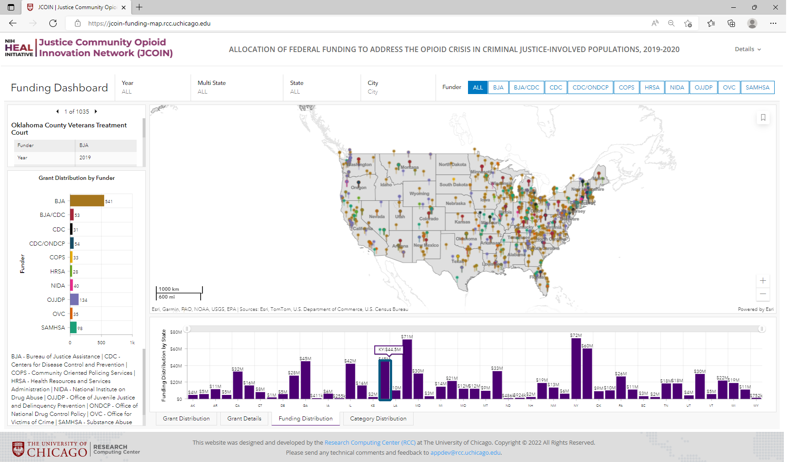
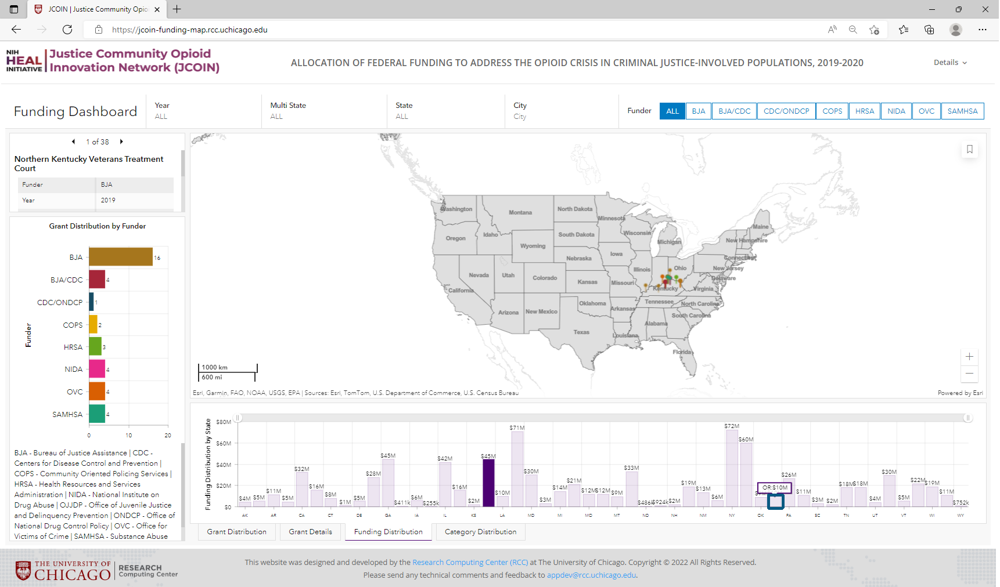
Combined filtering by state and category 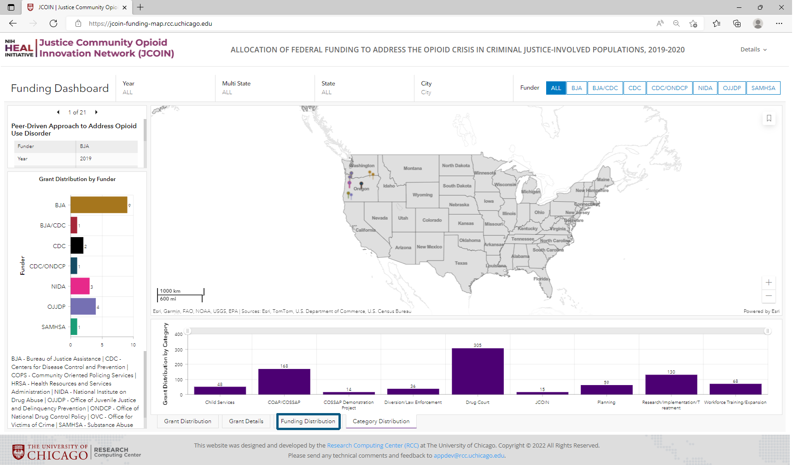For Maps to change the scale back to country scale, click default map resolution 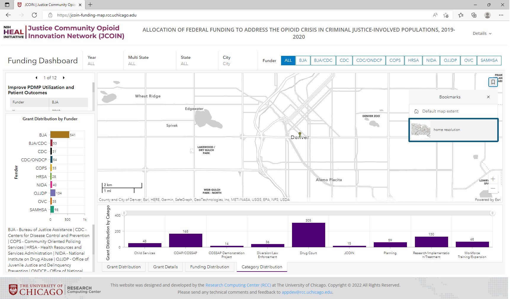